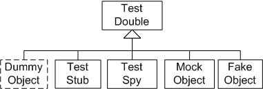

【Mockito】Java单元测试Mock框架Mockito入门介绍¶

鸡尾酒¶
Mockito是Java的单元测试Mock框架。它的logo是一杯古巴最著名的鸡尾酒Mojito，Ｍojito鸡尾酒，源自古巴的哈瓦那，带有浓厚的加勒比海风情。并不浓烈，但是喝一杯下去，脸上会泛起红晕，象少女的羞涩。味道很清新，有一点青涩、有点甜蜜。
Stub & Mock¶
Stub和Mock是Test Double类型中的2种。Test Double一共有5种类型，Dummy，Stub，Spy，Mock，Fake。

Test Double是测试复制品，用来统称模拟真实对象的假对象。因使用场景有略微不同，而有这5种类型。
Dummy，通常只用来填充参数列表。有可能是null对象引用，或Object类实例等。
Fake，是简化版的实现，比如基于内存实现的数据库，不会真的去做数据库操作，用简单的HashMap来存放数据。
Stub，Stub用来替代SUT(System Under Test)依赖的组件，但是只模拟一个外部依赖，不做断言。
Spy，介于Stub和Mock之间。如果真实对象没有被打桩，当调用Spy对象时，真实对象也会被调用。
Mock，可以理解为Stub+Verification，既模拟外部依赖，也会定义预期结果。
看一个实例，发送邮件，
public interface MailService {
public void send(Message msg);
}
先写个Stub，
public class MailServiceStub implements MailService {
private List<Message> messages = new ArrayList<Message>();
public void send(Message msg) {
messages.add(msg);
}
public int numberSent() {
return messages.size();
}
}
实现Stub的状态验证，
class OrderStateTester…
public void testOrderSendsMailIfUnfilled() {
Order order = new Order(TALISKER, 51);
MailServiceStub mailer = new MailServiceStub();
order.setMailer(mailer);
order.fill(warehouse);
assertEquals(1, mailer.numberSent());
}
只做了简单的测试，断言发出了1封邮件。没有测试是否发送给了对的收件人，或者邮件正文是否正确。不过不影响跟Mock比较。
如果用Mock，会怎么写呢？
class OrderInteractionTester…
public void testOrderSendsMailIfUnfilled() {
Order order = new Order(TALISKER, 51);
Mock warehouse = mock(Warehouse.class);
Mock mailer = mock(MailService.class);
order.setMailer((MailService) mailer.proxy());
mailer.expects(once()).method("send");
warehouse.expects(once()).method("hasInventory")
.withAnyArguments()
.will(returnValue(false));
order.fill((Warehouse) warehouse.proxy());
}
结合一张图，就一下全明白了，

怎么喝Mockito？¶
添加Maven dependency，
<dependency>
<groupId>org.mockito</groupId>
<artifactId>mockito-core</artifactId>
<version>3.3.3</version>
<scope>test</scope>
</dependency>
现在可以开始Mock了，先Mock一个List Interface试试，（示例只是玩语法，实际应使用instance）
//Let's import Mockito statically so that the code looks clearer
import static org.mockito.Mockito.*;
// mock creation
List mockedList = mock(List.class);
// using mock object
mockedList.add("one");
mockedList.clear();
// verification
verify(mockedList).add("one");
verify(mockedList).clear();
接着用Mockito来做Stub：
// You can mock concrete classes, not just interfaces
LinkedList mockedList = mock(LinkedList.class);
// stubbing
when(mockedList.get(0)).thenReturn("first");
when(mockedList.get(1)).thenThrow(new RuntimeException());
// following prints "first"
System.out.println(mockedList.get(0));
// following throws runtime exception
System.out.println(mockedList.get(1));
// following prints "null" because get(999) was not stubbed
System.out.println(mockedList.get(999));
// Although it is possible to verify a stubbed invocation, usually it's just redundant
// If your code cares what get(0) returns, then something else breaks
// (often even before verify() gets executed).
// If your code doesn't care what get(0) returns, then it should not be stubbed.
verify(mockedList).get(0);
mock默认会返回null，或原始值，或空集合。如int/Integer返回0，boolean/Boolean返回false。
小结¶
本文首先介绍了Mockito是Java的单元测试Mock框架，然后比较了单元测试中Stub和Mock的区别，最后演示了Mockito如何使用。